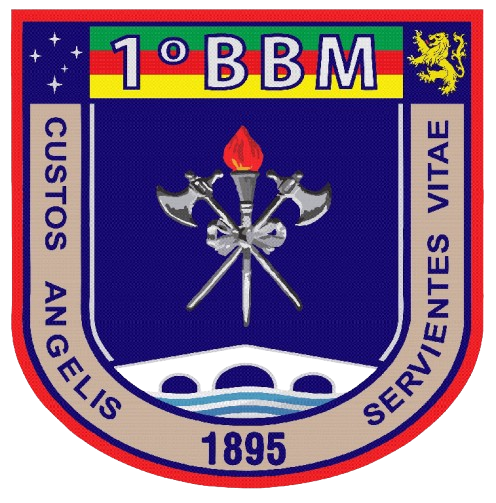

Organograma
Corpo de Bombeiros Militar do Rio Grande do Sul · Regimento Interno (Portaria CBMRS nº 001/2025) · destaque: 1º BBM / Porto Alegre

1º BBM';">
1º BBM';">Clique em qualquer caixa para abrir os níveis abaixo · passe o mouse para ver a descrição e a competência